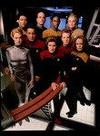

Star Trek: Voyager
Stephen Klancher
...has seen 170
...has seen 2.8 hours
...has not seen 0 hours

Timeline
Most Recent:
Endgame
First Unseen:
Caretaker: Part 2 (# 3)
...has seen 170
...has seen 2.8 hours
...has not seen 0 hours
Timeline
Most Recent:
Endgame
First Unseen:
Caretaker: Part 2 (# 3)

Stephen Klancher: May 25, 2014 
Ocampa mating process is the weirdest thing ever. Kes looked like a vampire trying to hold back a transformation. Also, regarding the space creatures leaving the ship, one of Tuvok's weirdest lines: "It appears we have lost our sex appeal, Captain."
Stephen Klancher: May 31, 2014
When I think of Voyager, the silliness of this episode always comes to mind: Warp-10 means you are everywhere at once and ultimately turns you into a lizard. Even though the last episode of TNG showed warp 13 as just incrementally faster.
Stephen Klancher: June 1, 2014
That was pretty exciting, which I'm hoping is indicative of episodes to come. I enjoyed the fight between the Cardassian and B'Elanna identities within Dreadnought. Also, point of trivia: Janeway enabled the self-destruct by herself. I'm pretty sure all previous Trek ships required two senior officers.
Stephen Klancher: June 7, 2014
Two Janeways! Well, two of everyone. On Kim being from a duplicate from a duplicate ship: "We're Starfleet officers: Weird is part of the job."
Stephen Klancher: June 22, 2014
Wait does he go forward with no or only some knowledge of the past 2 years?
Stephen Klancher: July 13, 2014
Time travel is always fun and I laughed to see Sarah Silverman there.
